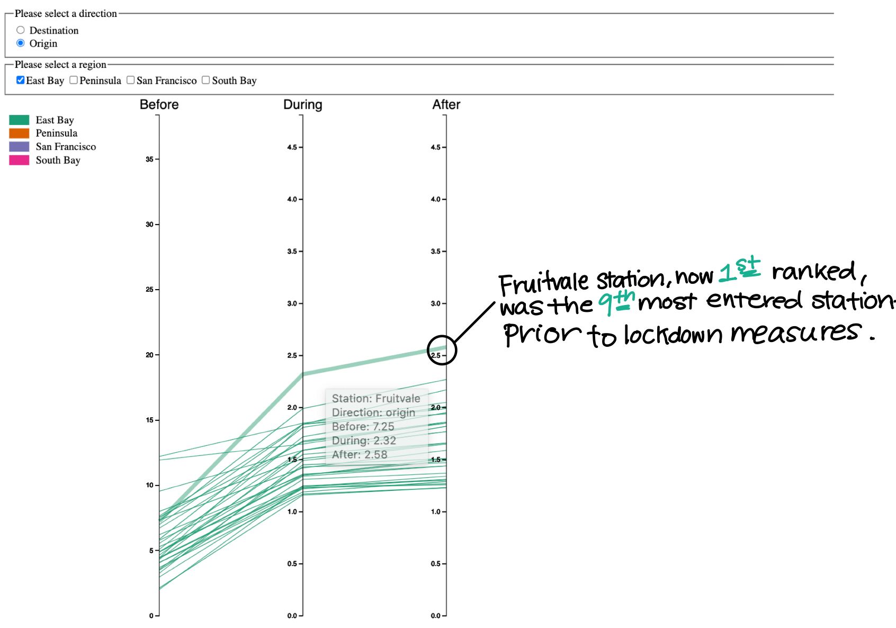
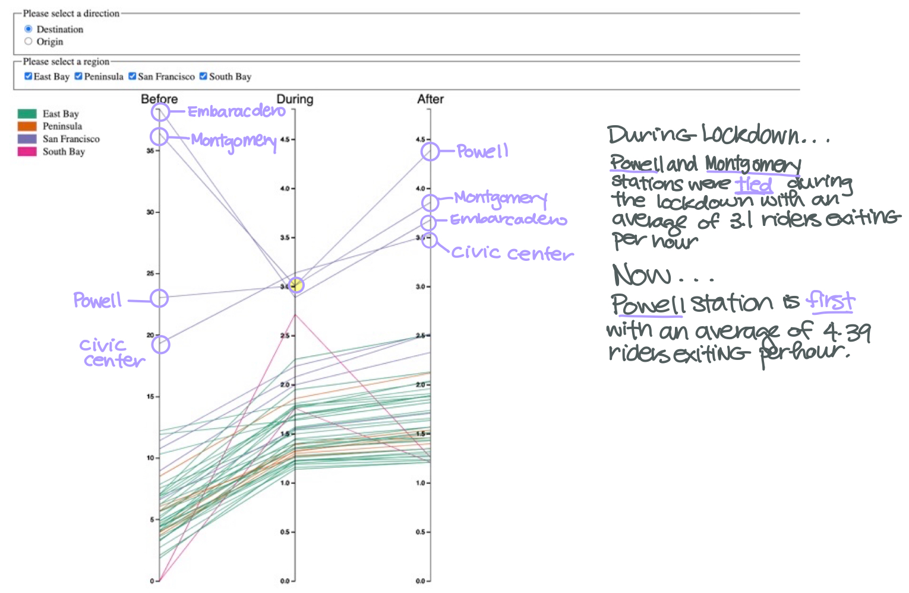

Parallel Coordinates Chart Showing Changes in Station Ridership Patterns Before, During, and After Lockdown Measures
*Hover on a line to see how the station's ridership changed during the different time periods*
Please select a direction
Destination
Origin
Please select a region
East Bay
Peninsula
San Francisco
South Bay
Findings
Fruitvale Became the Most Popular Origin Station in the East Bay

Downtown San Francisco Stations Dominate in Popularity Before, During, and After Lockdown Measures
